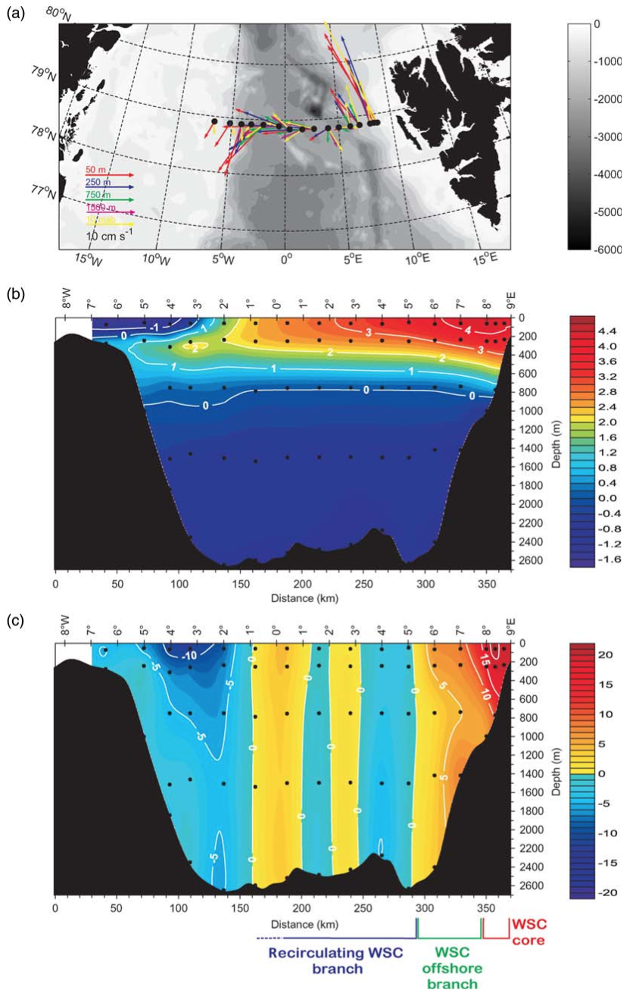
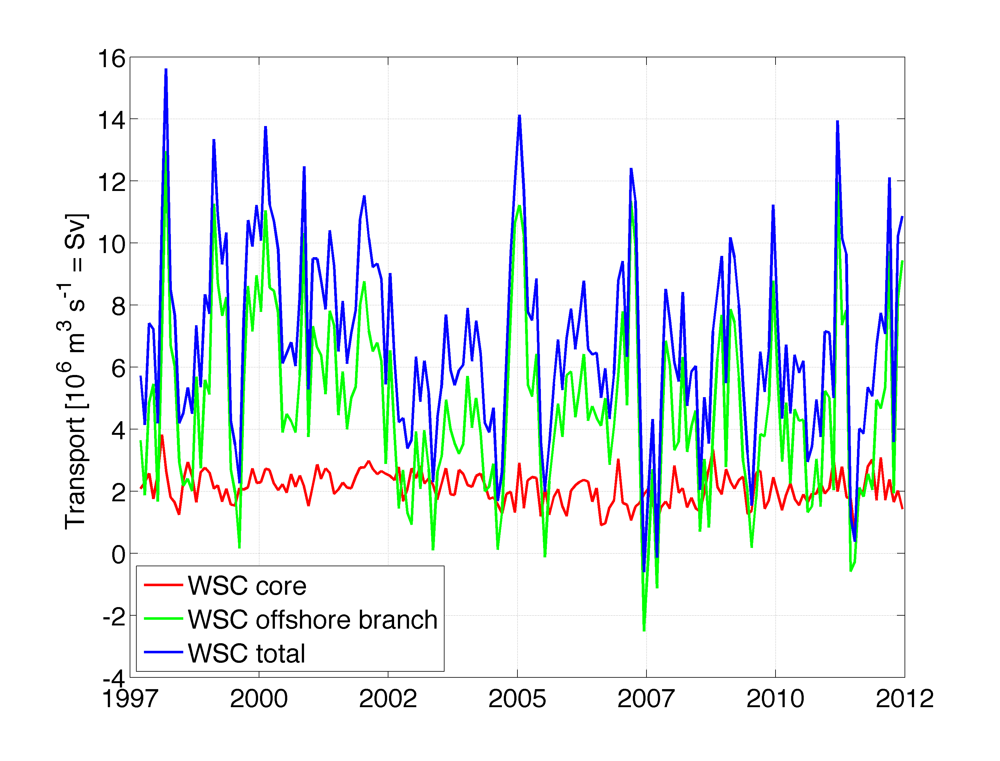

| |||||||||||||
|
2. GSR Greenland Scotland Ridge 3. OSNAP Overturning in the Subpolar North Atlantic Program 4. NOAC North Atlantic Changes 6. MOVE Meridional Overturning Variability Experiment 8. SAMBA-SAMOC South Atlantic Meridional Overturning Circulation
|
Fram StraitWest Spitsbergen Current time series
Brief description of the TMAAtlantic Water is the main oceanic source of heat, salt, and nutrients of the Arctic Ocean. Part of it is transported through the Barents Sea into the Arctic Ocean. The other part flows northward in the eastern Fram Strait in the West Spitsbergen Current. The long-term observations of the AWI aim to measure the volume transport of the Atlantic Water that enters the Arctic Ocean and to also monitor its properties including temperature and salinity. In the first half of the observational record starting in 1997, a marked increase of the Atlantic Water temperature was observed. In the western Fram Strait, the Norwegian Polar Institute maintains a mooring array that monitors the East Greenland Current which transports Arctic outflow water southwards.

Figure 1: (a) Mooring locations with mean current vectors overlaid on the bathymetry in Fram Strait. (b) Cross-section of mean mooring derived temperature; the individual instrument locations are marked by black dots. (c) Cross-section of the mean mooring derived northward (i.e. across the section) velocity. WSC: West Spitsbergen Current. Locations of the WSC core and the WSC offshore branch are indicated at the bottom. (Beszczynska-Möller et al., 2012) Data products: volume transport time seriesFig. 2: Time series of volume transport in the West Spitsbergen Current core, offshore branch, and the total. See Figure 1 for branch division. Transport data can be downloaded hereBeszczynska-Möller, A., E. Fahrbach, U. Schauer, and E. Hansen, 2012: Variability in Atlantic water temperature and transport at the entrance to the Arctic Ocean, 1997–2010. ICES Journal of Marine Science: Journal du Conseil, 69 (5), 852–863, doi:10.1093/icesjms/fss056.
The array instrument data are available at
ftp://ftp.ifremer.fr/ifremer/oceansites/DATA/
PublicationsBeszczynska-Möller, A., R. Woodgate, C. Lee, H. Melling, and M. Karcher, 2011: A synthesis of exchanges through the main oceanic gateways to the Arctic ocean. Oceanography, 24 (3), 82–99. Beszczynska-Möller, A., E. Fahrbach, U. Schauer, and E. Hansen, 2012: Variability in Atlantic water temperature and transport at the entrance to the Arctic Ocean, 1997–2010. ICES Journal of Marine Science: Journal du Conseil, 69 (5), 852–863, doi:10.1093/icesjms/fss056. Fahrbach, E., J. Meincke, S. Østerhus, G. Rohardt, U. Schauer, V. Tverberg, and J. Verduin, 2001: Direct measurements of volume transports through Fram Strait. Polar Research, 20 (2), 217–224. Hattermann, T., P. E. Isachsen, W.-J. von Appen, J. Albretsen, and A. Sundfjord, 2016: Eddy-driven recirculation of Atlantic Water in Fram Strait. Geophysical Research Let- ters, 43, 1–9, doi:10.1002/2016GL068323. Schauer, U., and A. Beszczynska-Möller, 2009: Problems with Estimation and Interpretation of Oceanic Heat Transport—Conceptual Remarks for the Case of Fram Strait in the Arctic Ocean. Ocean Science, 5, 487–494. Schauer, U., A. Beszczynska-Möller, W. Walczowski, E. Fahrbach, J. Piechura, and E. Hansen, 2008: Arctic-Subarctic Ocean Fluxes, chap. Variation of Measured Heat Flow Through the Fram Strait Between 1997 and 2006, 65–85. Springer. Schauer, U., E. Fahrbach, S. Osterhus, and G. Rohardt, 2004: Arctic warming through the Fram Strait: Oceanic heat transport from 3 years of measurements. Journal of Geophysical Research, 109 (C6), C06 026. Stöven, T., T. Tanhua, M. Hoppema, and W.-J. von Appen, 2016: Transient tracer distributions in the Fram Strait in 2012 and inferred anthropogenic carbon content and transport. Ocean Science, 12, 319–333, doi:10.5194/os-12-319-2016. von Appen, W.-J., U. Schauer, T. Hattermann, and A. Beszczynska-Möller, 2016: Seasonal cycle of mesoscale instability of the West Spitsbergen Current. Journal of Physical Oceanography, 46 (4), 1231–1254, doi:10.1175/JPO-D-15-0184.1. von Appen, W.-J., U. Schauer, R. Somavilla, E. Bauerfeind, and A. Beszczynska-Möller, 2015: Exchange of warming deep waters across Fram Strait. Deep Sea Research, 103, 86–100, doi:10.1016/j.dsr.2015.06.003. | ||||||||||||